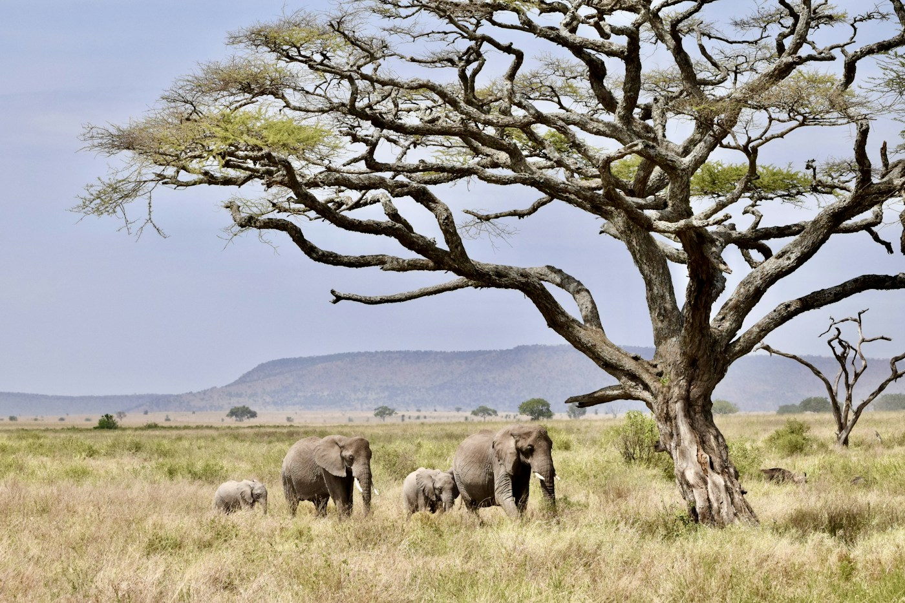
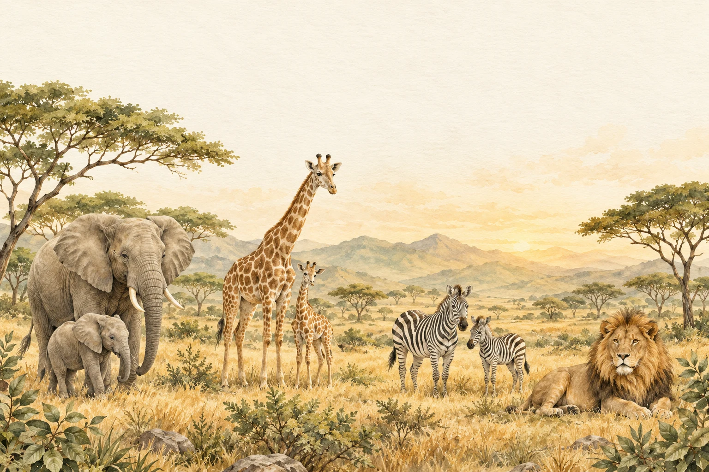
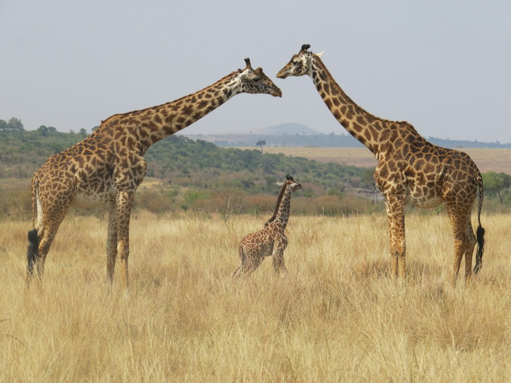
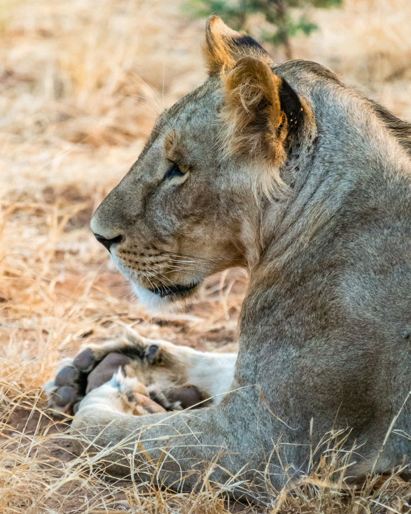

0112:00 P. M.
El encuentro
Reunimos a nuestra manada para dar la bienvenida a un día muy especial.
UNA INVITACIÓN A LO EXTRAORDINARIO
Bienvenido a mi
Dos años explorando el mundo.
Una gran aventura por celebrar.

UN DÍA PARA ATESORAR

EL EXPLORADOR DE ESTA HISTORIA
Hace dos años comenzó nuestra aventura más bonita. Desde entonces, cada sonrisa, cada descubrimiento y cada abrazo han llenado nuestro mundo de alegría.
Hoy, Aldo Aldair cumple 2 años y queremos celebrarlo contigo, entre amigos, risas y toda la magia de un safari.
La aventura es más bonita si vienes tú.
RESERVA UN DÍA PARA LA AVENTURA
Domingo, 25 de octubre de 2026 · 12:00 p. m.
¡El día de nuestra aventura ha llegado!
NUESTRA RUTA DEL DÍA
Todo está preparado para una celebración inolvidable.

0112:00 P. M.
Reunimos a nuestra manada para dar la bienvenida a un día muy especial.

022:00 P. M.
Una pausa para compartir la comida, jugar y llenar la tarde de sonrisas.

034:00 P. M.
Llegó el momento del pastel, las velitas y la piñata. ¡Que comience la fiesta!
COORDENADAS DE NUESTRA AVENTURA
Parque de los Coyotes
PALAPA 6 · CIUDAD DE MÉXICO
Calzada de la Virgen, Rosa María Sequeira, Coapa, Ex-Ejido de San Pablo Tepetlapa, 04840 Ciudad de México, CDMX.Cómo llegar Nos vemos el domingo a las 12:00 p. m.MI DIARIO DE EXPLORADOR
Los pequeños momentos que se vuelven nuestros grandes tesoros.
Toca una fotografía para verla de cerca.
EN TU MOCHILA DE EXPLORADOR
Ven cómodo y listo para la aventura. El estilo casual sigue siendo perfecto para disfrutar la fiesta.
Tu presencia es nuestro regalo favorito. Si deseas tener un detalle con Aldo Aldair, podrás entregarlo el día de la fiesta.
Los mejores recuerdos
se viven en compañía.
HAY UN LUGAR PARA TI EN NUESTRA MANADA
Nos encantará compartir este día contigo.
Confirma tu asistencia con nuestros anfitriones.